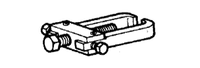

オートマチック トランスアクスルASSY（U340E） 準備品 【取り外し】
| 09268-21010 | フューエルホースプラー | |
 | 09520-01010 | ドライブシャフトリム-バ- アタッチメント |
 | 09520-24010 | ディファレンシャルサイドギヤ シャフトプラー |
 | (09520-32040) | ショッカーセット |
 | 09628-00011 | ボ-ルジョイントプラ- |
|  | 09628-62011 | ボールジョイントプラー |
 | 09930-00010 | ドライブシャフトナットチゼル |
 | 09011-12301 | ソケットレンチ（30mm）２重６角 |
 | 09023-38400 | ユニオンナットレンチ １４ |
 | 09060-20030 | クリップリムーバー (先端開口幅１０mm 全長１００mm) |
| プラスチックハンマー | ||
| トルクレンチ | ||
 | EL-400H | エンジンリフター (株)バンザイ扱い |
 | EL-400 | エンジンリフター (株)イヤサカ扱い |
| ひも | ||
| 保護テープ |